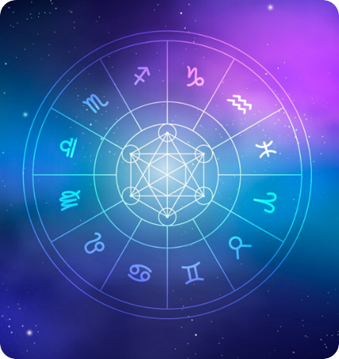

Our blog is designed to educate, guide, and empower readers through authentic occult sciences. Each article is written with the intent to provide clarity, practical understanding, and ethical solutions—not fear or superstition.
All articles are solution-oriented, easy to understand, and based on experience, not copied theory.
👉 Each article includes a Book Consultation option for readers seeking personalized guidance.


Astrology and numerology are guidance-based sciences. Accuracy depends on correct birth details, proper analysis, and ethical interpretation. These sciences provide clarity and direction, not fixed predictions or guarantees.
Results vary from person to person. Some people experience clarity or relief quickly, while others notice gradual changes over weeks or months. Outcomes depend on karma, effort, planetary timing, and consistency.
No. Remedies are always optional. They are suggested only after deep analysis and only if truly required. There are no forced remedies or fear-based instructions.
No guarantees are offered. Occult sciences work on awareness, alignment, and guidance. Results depend on individual circumstances, actions, and mindset.
Yes. Astrology, numerology, Reiki, and LamaFera work beyond physical presence. Online consultations and distance healing are equally effective when performed correctly and ethically.
For astrology consultation, the following details are required:
Date of birth
Time of birth (as accurate as possible)
Place of birth
These details help in creating an accurate birth chart.
No. Energy healing is complementary, not a replacement for medical treatment. Clients are advised to continue medical care alongside healing sessions.
Yes. All consultations, personal details, and discussions are kept strictly confidential and are never shared with anyone.
Yes. A single consultation can cover multiple areas such as career, marriage, finance, and health, within the session duration.
All explanations are given in simple, clear language. Clients are encouraged to ask questions during the session for better understanding.
No. Astrology does not remove free will. It helps you understand timing, tendencies, and choices, so you can make better decisions consciously.
Consultation is ideal for people who:
If you need clarity before booking, feel free to reach out.
📲 Talk on WhatsApp 🔮 Book Consultation